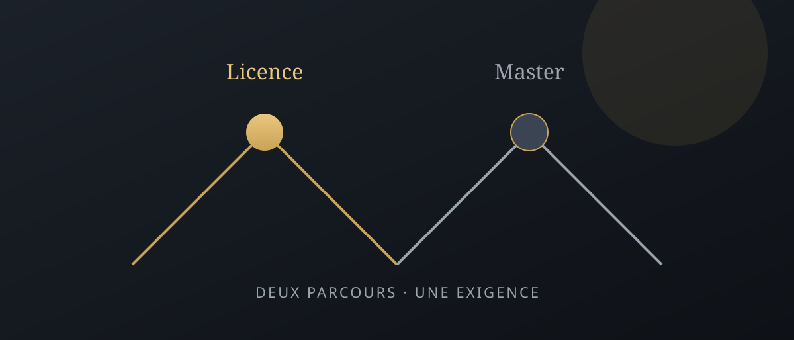

Licence d'Excellence vs Master d'Excellence : quelles différences de préparation ?
Même famille de concours d'excellence — pas le même niveau d'attente. Voici comment adapter votre préparation selon que vous visez la Licence ou le Master.

Beaucoup de candidats préparent « le concours d'excellence » comme s'il n'y en avait qu'un. En réalité, Licence et Master d'Excellence partagent un esprit sélectif, mais pas le même niveau d'attente. Cet article complète la méthode orale en 5 étapes et le guide révision d'été (compta, éco, management).
1. Ce qui est commun
Dans les deux cas, le jury évalue clarté, bases disciplinaires et capacité à tenir sous pression. Les matières pivots reviennent souvent : comptabilité / finance, économie, management, anglais. La structure d'une bonne présentation (parcours → motivation → apport → projet) reste valable.
2. Ce qui change vraiment
- Licence — on regarde le potentiel, la rigueur de base, la motivation à entrer dans un cursus exigeant.
- Master — on attend un projet plus abouti, une argumentation plus fine, parfois une expérience (stage, responsabilité) mieux valorisée.
Autrement dit : même « fil rouge » oral, mais profondeur et maturité différentes. Ne recyclez pas mot pour mot une présentation Licence pour un Master.
3. Adapter la préparation
Si vous visez la Licence : sécurisez les bases (voir révision d'été), multipliez les oraux blancs courts, soignez la motivation « pourquoi l'excellence maintenant ».
Si vous visez le Master : ajoutez 2–3 cas d'analyse (entreprise, décision, indicateur), renforcez l'anglais conversationnel, et préparez une vision post-master crédible (même provisoire).
4. Double candidature : comment ne pas se disperser
Mutualisez 70 % du fond (exercices, fiches). Séparez 30 % : deux versions du pitch oral, deux listes de questions « pourquoi ce niveau ». Chronométrez chaque version séparément.
Passer à l'action
Pour accélérer méthodes et exercices, rejoignez la semaine gratuite NC Consulting (début 23 juillet 2026). Puis affinez selon votre cible Licence ou Master avec la méthode en 5 étapes.
Choisir sa cible : concours excellence Meknès et région
Avant de comparer les différences de préparation Licence / Master d'Excellence, lisez l'avis de concours de votre établissement (écrit, oral, packs finance / management / marketing). Les filières d'excellence à Meknès et dans la région Fès-Meknès évoluent : basez-vous sur le document officiel de l'année.
La préparation Master d'Excellence demande souvent plus de maturité dans le « pourquoi ce parcours » et une aisance à l'anglais conversationnel. La Licence mise davantage sur le potentiel et la solidité des bases Bac+2.
Double candidature : stratégie sans dispersion
Mutualisez 70 % du fond (compta, éco, management) via la révision d'été. Séparez deux pitchs oraux — voir la méthode en 5 étapes.
FAQ — Licence vs Master d'Excellence
Quelle est la différence entre les deux concours ?
La Licence d'Excellence s'adresse plutôt à des profils Bac+2 / sortie de DEUG ou équivalent qui veulent un parcours sélectif en licence. Le Master d'Excellence cible des candidats déjà diplômés (ou en fin de licence) avec un projet plus abouti et souvent une exigence plus haute à l'oral sur le raisonnement et le projet professionnel.
Les épreuves sont-elles identiques ?
Pas toujours. Le format (écrit + oral, oral seul, packs de spécialité) dépend de l'établissement et de l'année. En revanche, les matières pivots — comptabilité, économie, management, anglais — reviennent souvent. Vérifiez l'avis de concours de votre école avant de calquer un planning générique.
Quel niveau faut-il pour candidater au Master ?
En pratique : une licence (ou équivalent) dans un domaine proche, des bases solides en économie / gestion, et une motivation claire. Le jury Master attend davantage de maturité dans le projet et la capacité à argumenter, pas seulement des définitions.
La préparation est-elle plus longue pour le Master ?
Souvent oui sur le fond (analyse, argumentation, anglais plus fluide), pas forcément sur le calendrier. Quatre à six semaines ciblées suffisent si vous avez déjà des bases ; sinon allongez la phase « sécuriser les fondamentaux » avant les oraux blancs.
Peut-on candidater aux deux la même année ?
Oui si les calendriers et conditions le permettent. Dans ce cas, mutualisez la révision des bases et différenciez vos présentations orales (fil rouge Licence vs projet Master). Ne préparez pas deux dossiers « copies » : le jury sent le flou.
Quelles écoles proposent ces parcours à Meknès ?
Plusieurs établissements et filières d'excellence existent dans la région de Meknès / Fès-Meknès — la liste exacte évolue chaque année. Consultez les avis de concours officiels et rapprochez-vous d'un accompagnement local (comme NC Consulting) pour cadrer le format de votre cible.